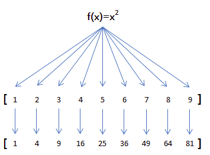

map/reduce
map
举例说明，比如我们有一个函数f(x)=x2，要把这个函数作用在一个数组[1, 2, 3, 4, 5, 6, 7, 8, 9]上，就可以用map实现如下：

由于map()方法定义在JavaScript的Array中，我们调用Array的map()方法，传入我们自己的函数，就得到了一个新的Array作为结果：
function pow(x) {
return x * x;
}
var arr = [1, 2, 3, 4, 5, 6, 7, 8, 9];
var results = arr.map(pow); // [1, 4, 9, 16, 25, 36, 49, 64, 81]
还能带index：
const array = [1,2,3,4];
array.map(function (value, index) {
console.log(index, value);
});
/*
0 1
1 2
2 3
3 4
*/
更可以带上 array本身：
array.map(function (value, index, array) {
console.log(array[index]);
});
/**
1
2
3
4
*/
reduce
再看reduce的用法。Array的reduce()把一个函数作用在这个Array的[x1, x2, x3...]上，这个函数必须接收两个参数，reduce()把结果继续和序列的下一个元素做累积计算，其效果就是：
[x1, x2, x3, x4].reduce(f) = f(f(f(x1, x2), x3), x4)
比方说对一个Array求和，就可以用reduce实现：
var arr = [1, 3, 5, 7, 9];
arr.reduce(function (x, y) {
return x + y;
}); // 25